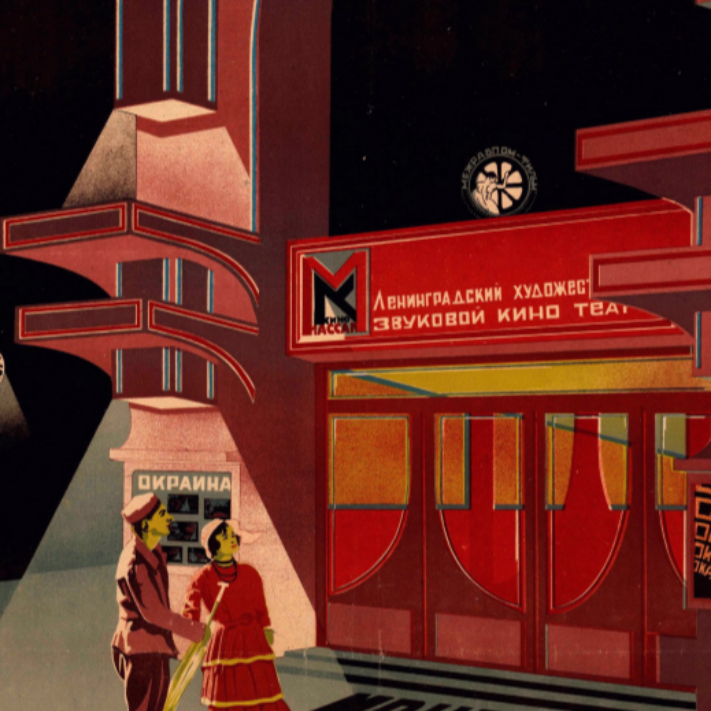
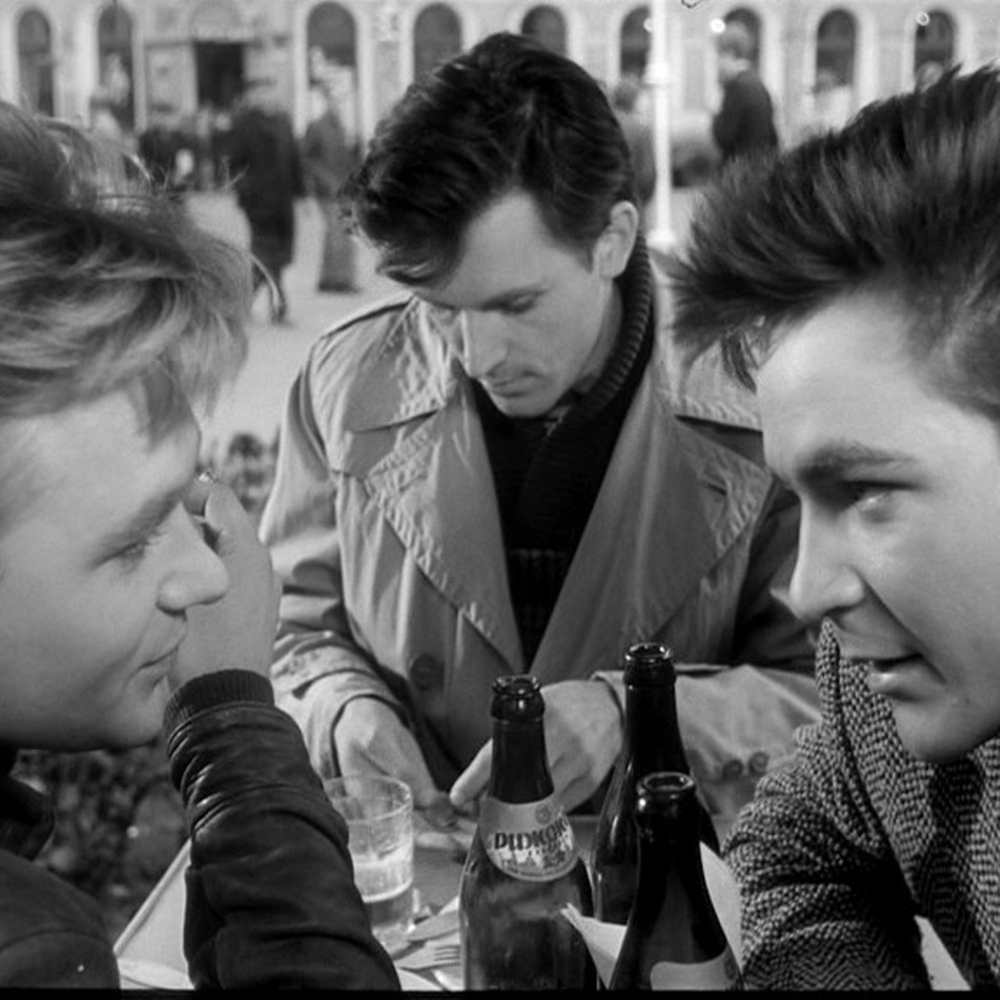
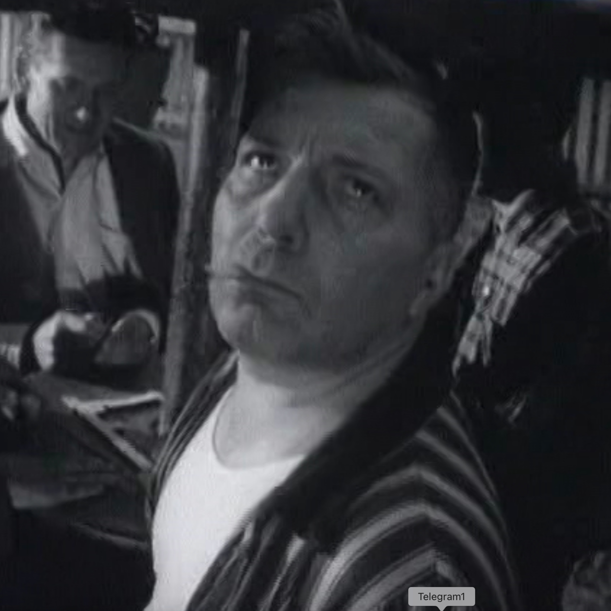
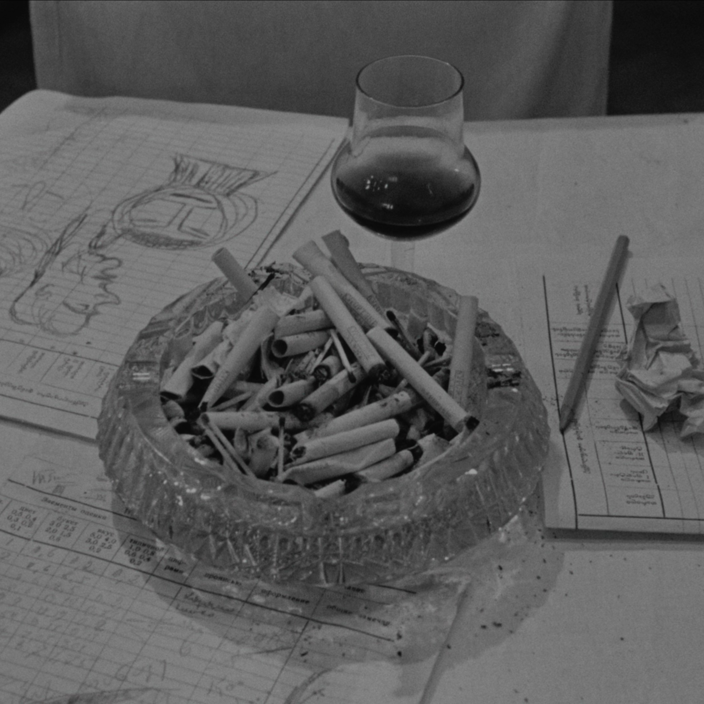
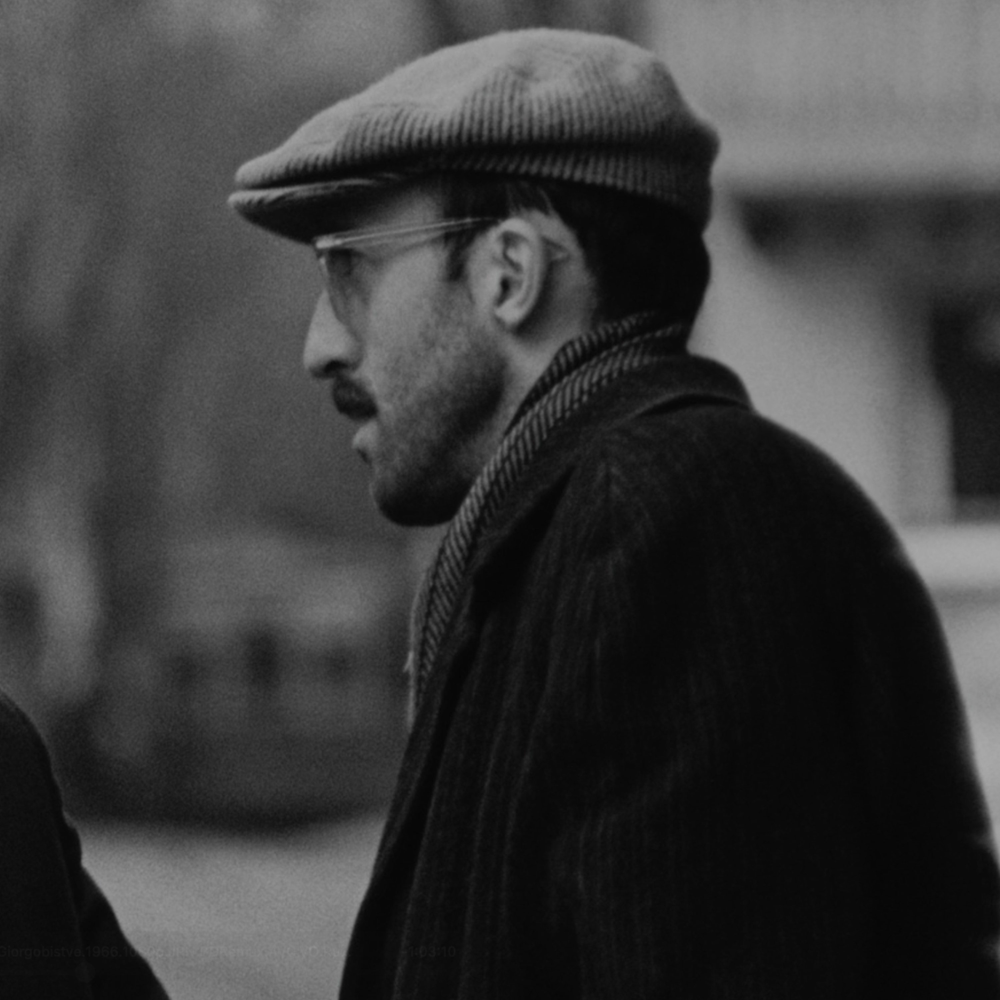
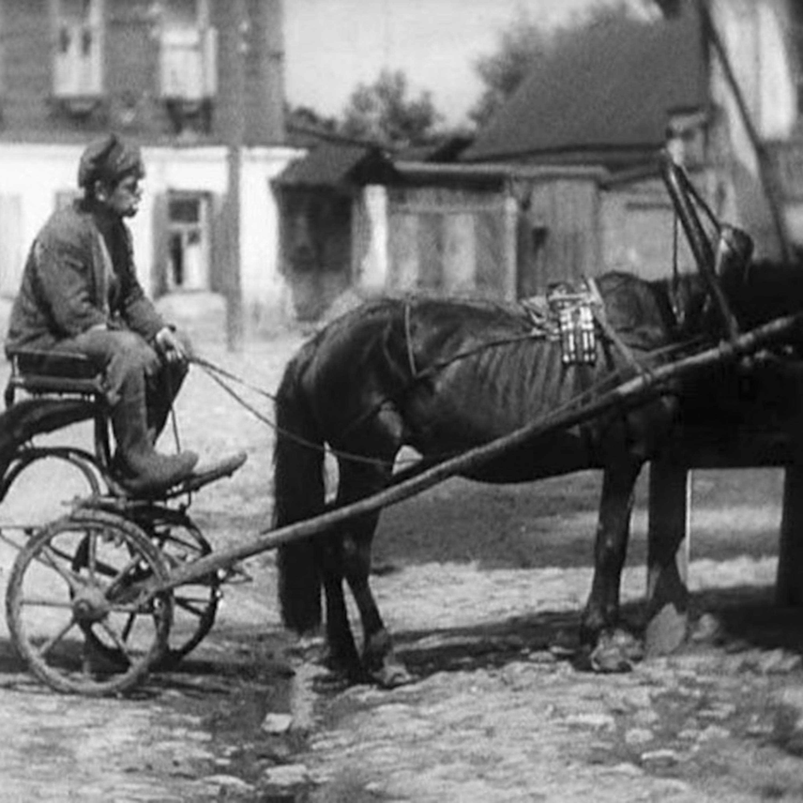
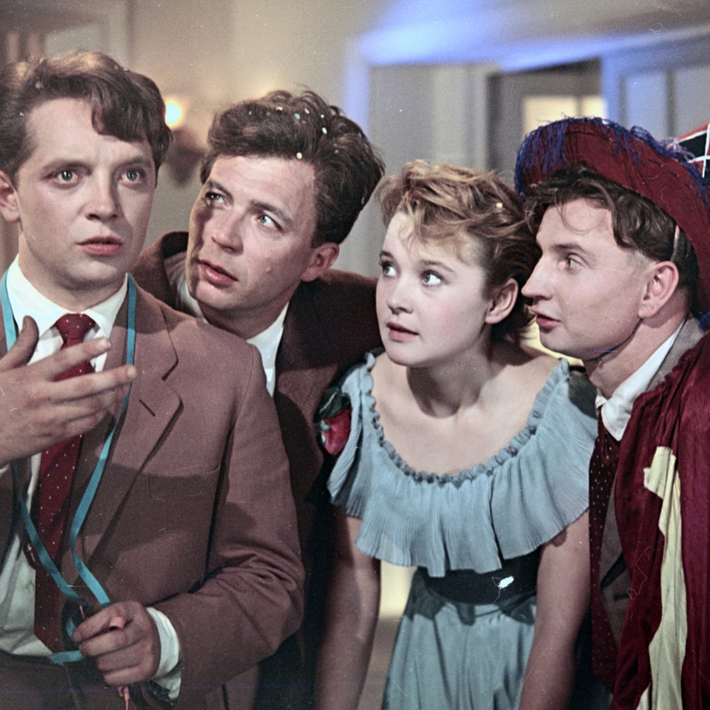
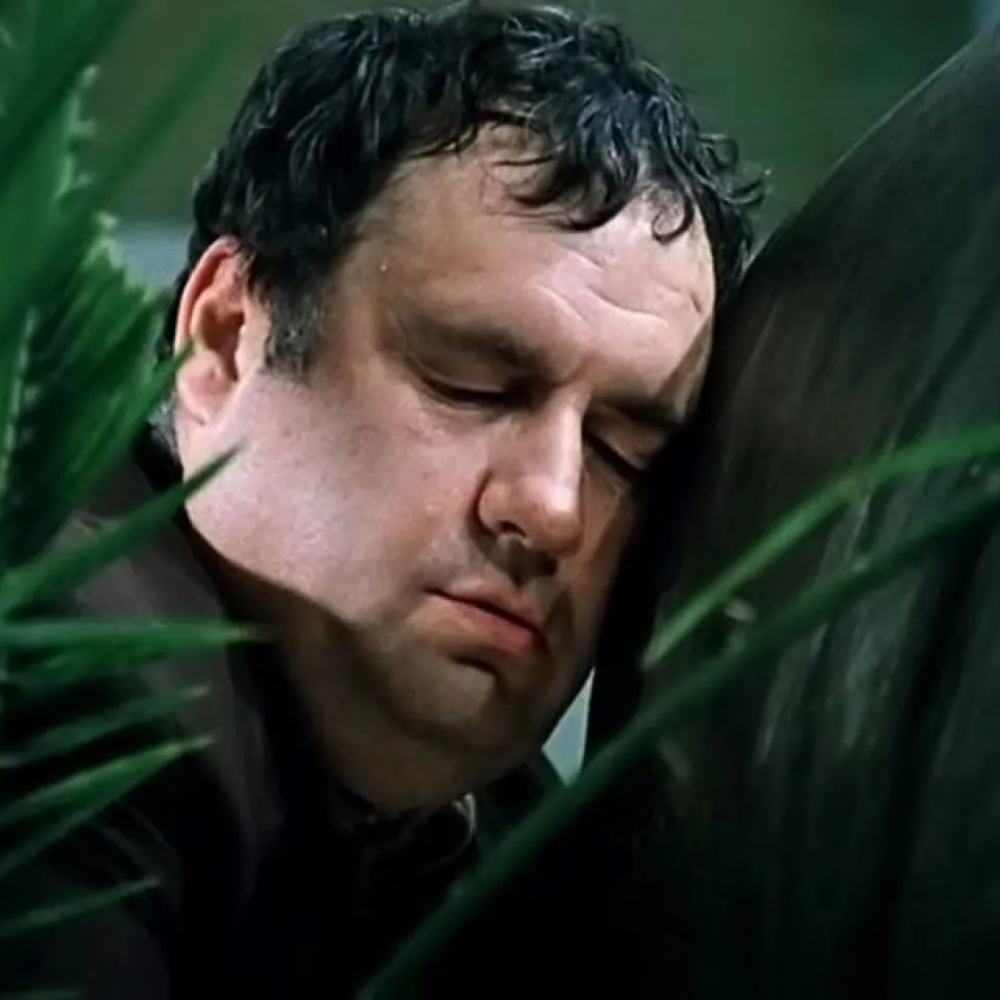
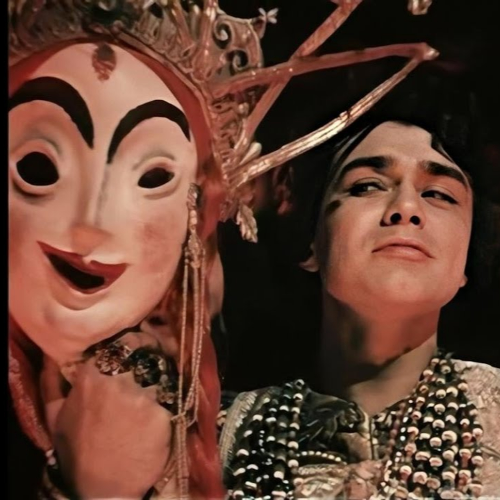
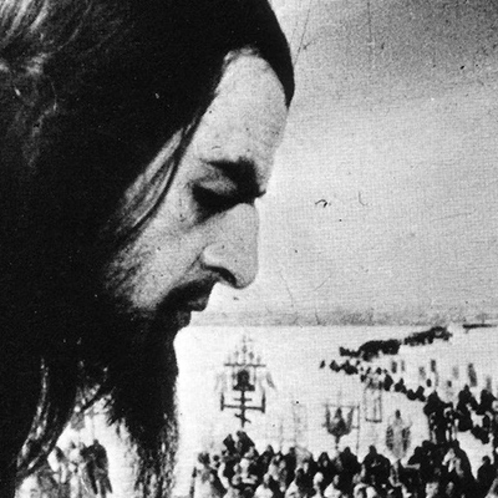

Cahiers du Soviéma
Apple Podcasts · Spotify · RSS

#8 – Застава Ильича (ч.2)
Эпизод 8, в котором мы продолжили разговор о фильме Марлена Хуциева и Геннадия Шпаликова "Застава Ильича".

#7 – Застава Ильича (ч.1)
Эпизод 7, в котором мы начали разговор о проекте Марлена Хуциева и Геннадия Шпаликова – двух ключевых фигур для кинематографа "Оттепели", – картине "Застава Ильича". Это первый из трех эпизодов, посвященных фильму.

#6 – Листопад (ч.2)
Эпизод шестой, в котором мы поговорили наконец про фильм "Листопад".

#5 – Листопад (ч.1)
Эпизод пятый, в котором мы должны были говорить про фильм "Листопад", а говорили про 1966 год в истории кино и взгляды Иоселиани на киноискусство.

#4 – Окраина
Эпизод четвертый, в котором мы поговорили про фильм "Окраина" и советское кино перед окончательным торжеством социалистического реализма

#3.а – Карнавальная ночь
Эпизод неканонический, в котором мы еще немного поговорили про Эльдара Рязанова и его дебютную полнометражную картину – фильм «Карнавальная ночь».

#3 – Гараж
Эпизод третий, в котором мы поговорили про гаражи и про советское общество эпохи застоя

#2 – Иван Грозный (ч.2)
Эпизод второй, в котором мы добрались до обсуждения фильма и наших о нем впечатлений.

#1 – Иван Грозный (ч. 1)
Эпизод первый, в котором мы хотели обсудить фильм, а вместо этого ударились в воспоминания и разобрали вопросы периодизации истории Советского Союза.